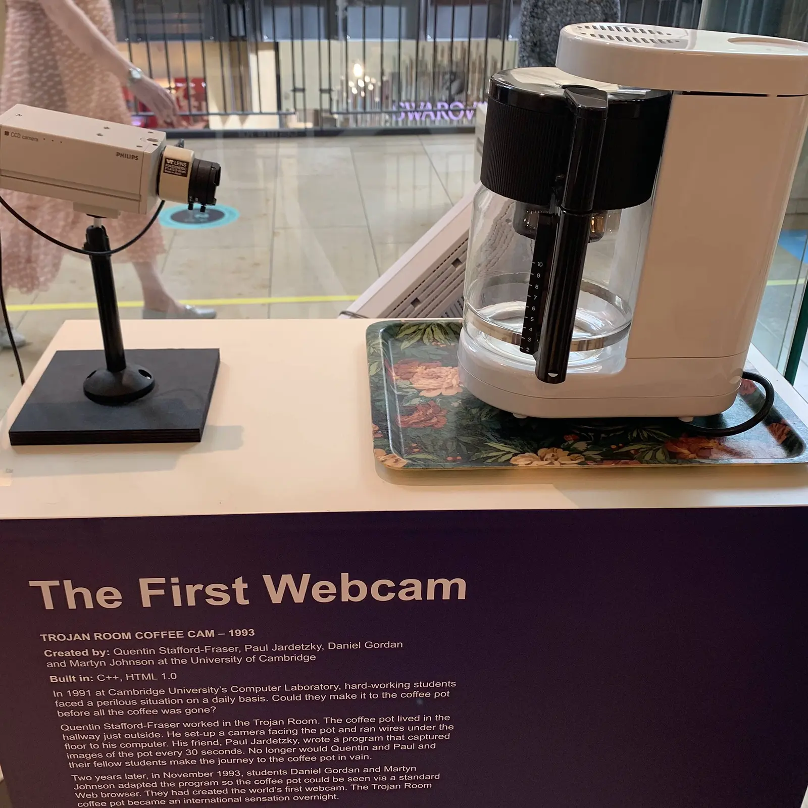
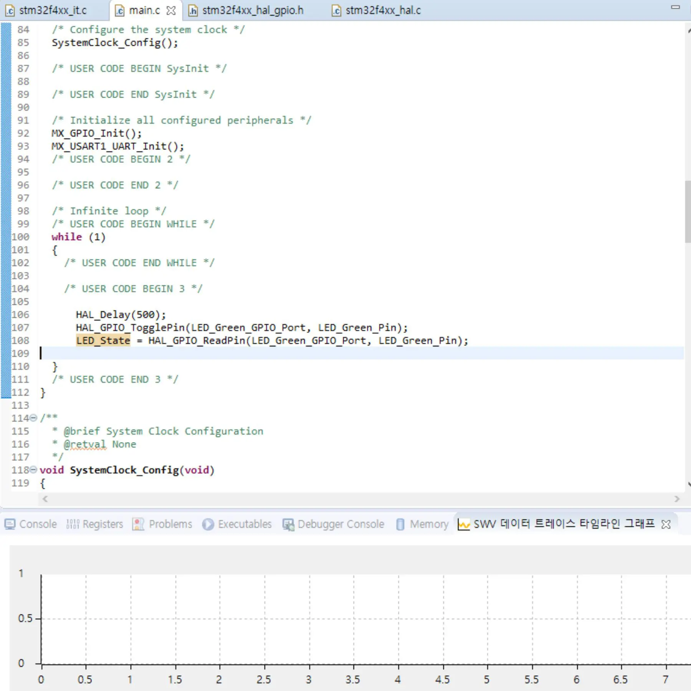
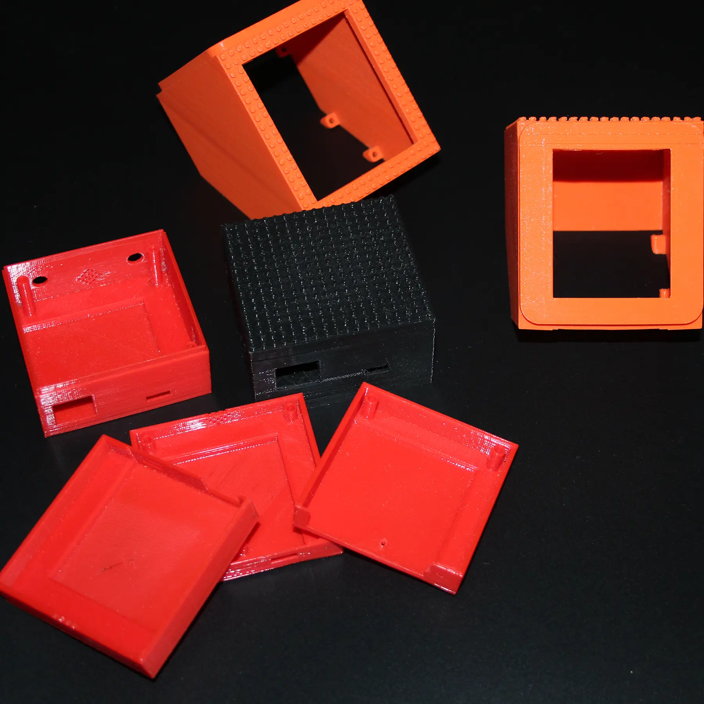
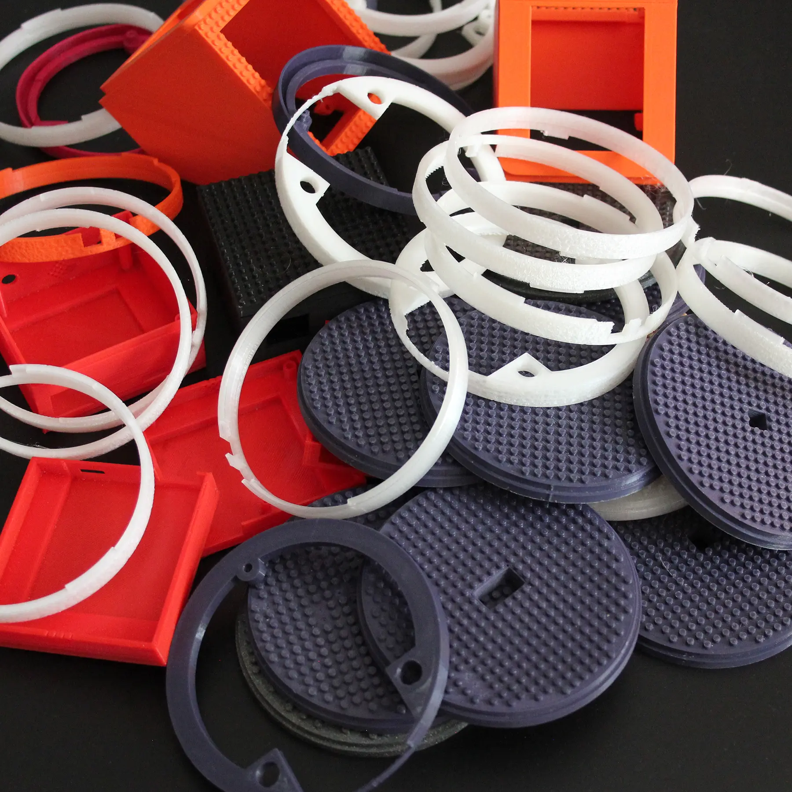

W3C Web of Things:
The open and free standard for the IoT

Tackling a Complex Challenge with Patience and Dedication
Back in 2007, researchers began exploring ways to address the separation of ecosystems in IoT.
At that time, lower-level standards were lacking,
making it difficult to create a solution that truly worked for constrained devices.
The W3C guides the Standardization Process
Seven years later, the W3C took the lead in steering the standardization process.
Led by Dave Raggett, known for his work on HTML, Siemens and Google joined the collaborative effort.
Siemens eventually assumed a leadership role, together with Intel.
Google stepped back from the standardization effort.
The Thing Description becomes a W3C Standard
By 2020, Thing Description 1.0 gained W3C recognition as a recommended standard.
Organizations can now seamlessly incorporate Thing Description (TD) into their processes, akin to HTML or CSS.
Discovery and TD 1.1
In 2023, a pivotal moment unfolded as Web of Things Discovery joined the recommended standards.
Together, they usher in a new era of easily scalable, interoperable IoT systems.
Addressing the Challenge of Outdated Tools
In 2018, while at the European big data analytics company Webtrekk, Philipp Blum encountered a hurdle.
A cost-saving initiative demanded a hardware-driven IoT approach, exposing a major issue:
Outdated tools across the IoT spectrum, from CI/CD to libraries, stuck in the 80s, 90s, or early 2000s.
Exploring the Synergy of Distributed Ledger and IoT
A year later, Blum embraced a role in a cryptocurrency venture.
Aiming to contribute to Distributed Ledger development with a focus on IoT.
Delving into IoT intricacies and associated technologies,
he realized that bridging the gap between the current state and the envisioned reality required substantial foundational groundwork before addressing higher-level topics.


Navigating 2020: Pandemic, W3C, and the Evolution of Web of Things
In 2020, amid global lockdowns, Philipp Blum utilized the pandemic downtime to explore Web of Things.
The same year, the W3C Web of Things working group invited him to join standardization efforts, with a focus on constrained devices and security.
Propelling Constrained Devices into the Future
Leveraging his RIOT OS experience, Blum began implementing the Web of Things Thing Description for RIOT OS.
A year later, Jan Romann joined, enhancing the project with code autogeneration and tools.
As Romann took over development, Blum shifted focus to a hardware development kit.
Filling the Gap
From implementation work arose a crucial question:
How do we put Web of Things (WoT) directly into engineers' hands?
They need a tool that's both fun and easy, showing the practical benefits of WoT standards.
The years 2022 and 2023 focused on creating this tool, starting with BLE, CoAP, and RIOT OS.
But there's a hurdle: the tech is complex for beginners.
Keep It Simple
The priority is a low entry barrier, not a perfect tech stack.Engineers must grasp true interoperability and the impact of a universal IoT standard.
Enter bit.block, an engaging device for learning next-gen web and IoT standards.
Use it as a doorbell, get server downtime alerts, or create a game.
These tools let you explore IoT, turning your ideas into highly scalable, interoperable systems accessible from browsers and enhanced with AI.
